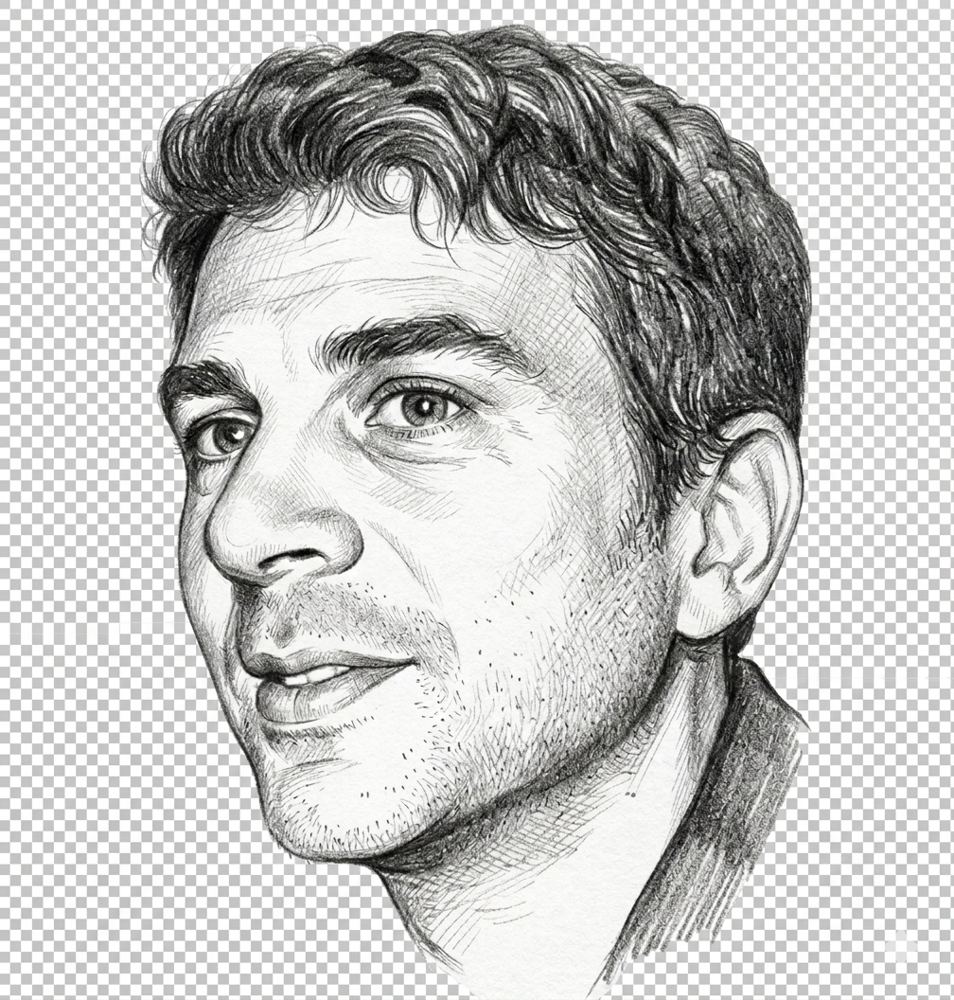

Full Professor of Mathematical PhysicsI am a mathematical physicist working at the intersection of dynamical systems, ergodic theory, and probability. My research centers on the long-time behavior of systems that are chaotic, non-compact, or set in random environments — regimes where classical methods break down and new ideas are needed. My main areas include infinite-measure ergodic theory, billiard dynamics, and random walks in disordered (Lévy) media.
A recurring theme across my work is the question of mixing and transport: how does information — or a physical particle — spread through an infinite or aperiodic system over time? This question connects pure mathematics to concrete physics: heat conduction, anomalous diffusion, and the statistical properties of gases.
Classical ergodic theory assumes finite invariant measures. My work extends mixing and recurrence theory to systems with infinite measure — the natural setting for many physical models of transport and diffusion.
Non-compact billiard tables — including infinite-step, semi-dispersing, and cusp billiards — provide geometric models for particle transport. I study their ergodicity, recurrence, hyperbolicity, and anomalous diffusion.
Random environments whose gap lengths follow heavy-tailed (Lévy) distributions produce anomalous transport. I prove limit theorems — laws of large numbers, CLTs, large deviations — for these models in 1D and beyond.
What does it mean for an infinite system to "mix"? I introduced the framework of global-local mixing and global observables, which gives a physically meaningful notion of decorrelation for spatially extended systems.
Early work on the ergodic properties of quantum ideal gases, large deviations in quantum lattice systems, and connections between classical billiard geometry and quantum ergodicity.
I am an advocate of computer-verified proofs and an amateur Lean 4 programmer. I co-organized the 2024 workshop "48 hours in Rome" and the 2025 "ItaLean" conference in Bologna.
I am an active advocate for the proof assistant Lean 4 and its mathematical library Mathlib. I believe that computer-verified proofs represent a genuine shift in how mathematics will be done in the (near) future, by humans and machines together.
As an amateur Lean programmer, I explore the formalization of simple and more complicated results, especially in my fields of interest. I co-organized the 2024 workshop "48 hours in Rome" and the December 2025 conference ItaLean — Bridging Formal Mathematics and AI in Bologna.